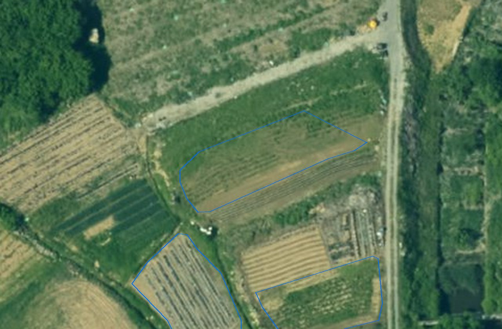
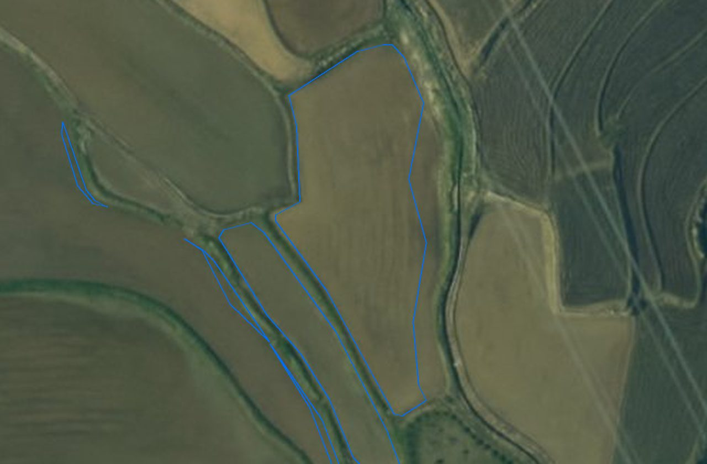
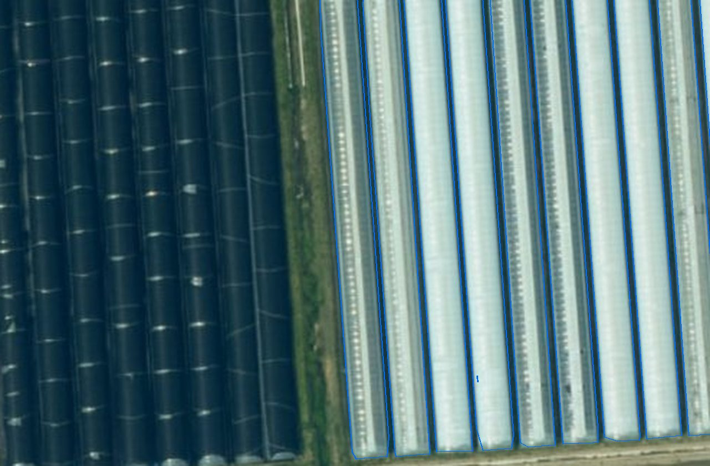
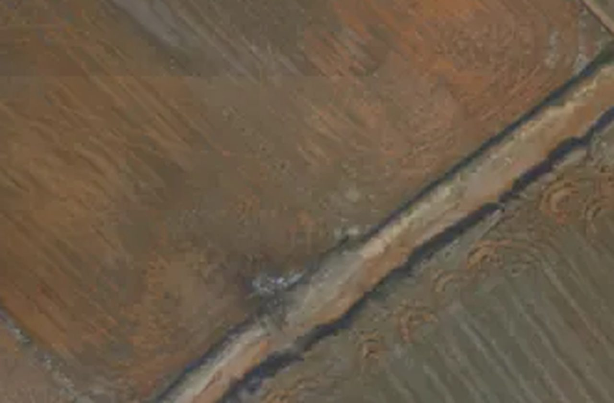
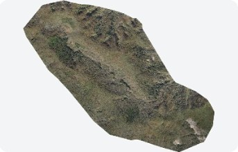
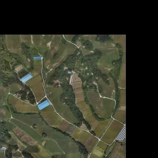
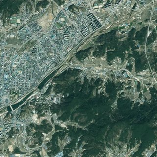

남원시 · 2026.10.01 기준v2.1
영농관리 행정서비스
경작·휴경·시설·전용을 판정해
확인할 필지만 남깁니다
95%AI 정확도
학습 검증 기준 · 2026.01
최근 분석 4곳 · 4,727㎢ · 2026.09.29
- 쓰이는 곳
- 운영 1 · 시범 4
- 걸리는 시간
- 구례 전역 약 18분
이 카드로 분석자세히 →
서비스 카드를 골라 지역을 정하면 AI가 분석합니다 — 결과는 XI맵에서 봅니다


남원시 · 2026.10.01 기준v2.1
경작·휴경·시설·전용을 판정해
확인할 필지만 남깁니다
학습 검증 기준 · 2026.01
최근 분석 4곳 · 4,727㎢ · 2026.09.29

시범증평군 외 2곳v1.0
단동·다동 비닐하우스를 찾아 셉니다
학습 검증 40장 기준 · 2026.09.30
최근 분석 3곳 · 1,668㎢ · 2026.09.30
보령시 · 2026.10.01 기준v1.0
들에 쌓인 곤포사일리지를 찾아 셉니다
학습 검증 12장 기준 — 표본이 적습니다 · 2026.09.30
최근 분석 1곳 · 1,704㎢ · 2026.09.30

시범남원시 · 2026.06.08 기준v1.0
두 시점 영상을 비교해 신축·
소실·식생 변화를 골라냅니다
학습한 모델이 아니라 검증 값이 없습니다
최근 분석 남원시 · 2시점 비교 · 2026.06.08
ⓑ 안 — 큰 숫자는 '최근 분석 넓이', AI 정확도는 아래 한 줄
남원시 · 2026.10.01 기준v2.1
경작·휴경·시설·전용을 판정해
확인할 필지만 남깁니다
4곳 전역 · 2026.09.29
AI 정확도 95% · 학습 검증 기준 · 2026.01
증평군 외 2곳v1.0
단동·다동 비닐하우스를 찾아 셉니다
3곳 전역 · 2026.09.30
AI 정확도 67% · 학습 검증 40장 · 2026.09.30
보령시 · 2026.10.01 기준v1.0
들에 쌓인 곤포사일리지를 찾아 셉니다
보령 전역 · 2026.09.30
AI 정확도 98% ~ 참고 · 학습 검증 12장(적음)
남원시 · 2026.06.08 기준v1.0
두 시점 영상을 비교해 신축·
소실·식생 변화를 골라냅니다
2026.06.08 · 넓이는 결과 범위에서 셉니다
정확도 — 검증 값이 없는 방식(두 시점 차이)
같은 부품 · 같은 두 줄(AI 정확도 · 최근 분석) · 자리마다 배지와 아래 두 칸만 다릅니다
① 분석하기LX 직원
남원시 · 2026.10.01 기준v2.1
경작·휴경·시설·전용을 판정해
확인할 필지만 남깁니다
학습 검증 기준 · 2026.01
최근 분석 4곳 · 4,727㎢ · 2026.09.29
② 서비스 카드 관리LX 직원 · 담당 · 관리자
남원시 · 2026.10.01 기준공개됨
경작·휴경·시설·전용을 판정해
확인할 필지만 남깁니다
학습 검증 기준 · 2026.01
최근 분석 4곳 · 4,727㎢ · 2026.09.29
③ 기관 서비스 선택남원시 GeoVision · 기관 색
2025년 사업
농지이용 경작·비경작 · 비닐하우스 · 사료작물
학습 검증 기준 · 2026.01
우리 시 결과 2025년 · 2026.10.01 갱신
④ 기관 2차 서비스기관 공간 · 모양 확인용예시
2026년부터 · 남원시
영농관리 결과를 해마다 겹쳐
바뀐 필지를 봅니다
입력영농관리 2026.10.01 결과입력 결과의 AI 정확도 95% · 학습 검증 기준
1차 결과가 갱신되면 이 서비스도 갱신됩니다
분석 요청은 순번 · 급함 · 담당을 조정해 관리하고, 승인 요청은 승인 · 반려합니다
분석은 한 번에 한 건씩 돕니다. 순번은 그 한 줄에 선 차례이고, 2번은 1번이 끝난 뒤 시작합니다.

광주전남특별시영농관리 · 10.01 12:26 순천시 와룡동·상사면 등 3곳약 3.92㎢ · 1.9cm 드론 확인 대기 담당 없음LX 관리자가 봄 승인하면 바로 ▲▼급함
남원시영농관리 · 10.01 14:10예시 남원시 국산리 일대약 1.2㎢ · 1.5cm 드론 분석 준비 LX 직원영농관리 담당 1번 끝난 뒤 ▲▼급함
광주전남특별시해양쓰레기 · 10.01 15:40예시 여수시 돌산읍 등 2곳약 18㎢ · 25cm 항공 · LX 공유 보류 담당 없음LX 관리자가 봄 모델 등록 뒤 ▲▼급함처리한 요청은 '처리 기록'에서 — 승인 · 반려 · 보류 · 순번 조정이 누가 언제 했는지 남습니다
분석 요청은 순번 · 급함 · 담당을 조정해 관리하고, 승인 요청은 승인 · 반려합니다
| 종류 | 대상 | 요청자 | 요청일 ↓ |
|---|---|---|---|
| 운영 전환 | 남원시 도로 안전관리 | — | 2026.09.26 |
| 운영 전환 | 키르기스 농업부 농지 이용 실태 분석 | — | 2026.09.26 |
지금 화면에서 '결재'가 보이는 곳과 바뀐 말 — 메뉴 · 큰 숫자 · 버튼 · 알림 · 직원 화면